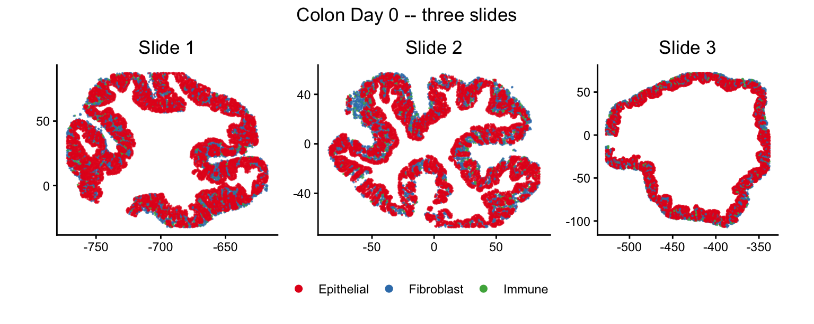
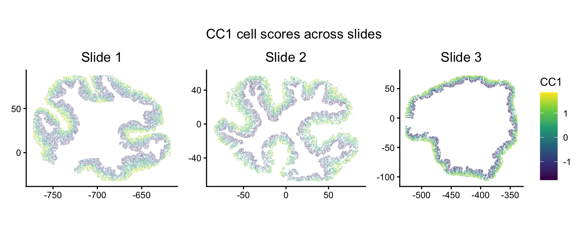
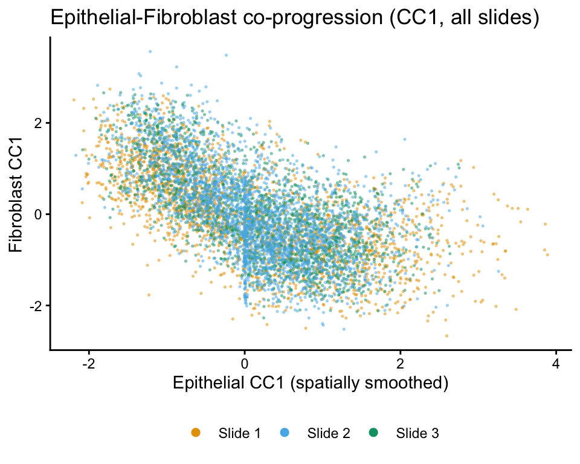
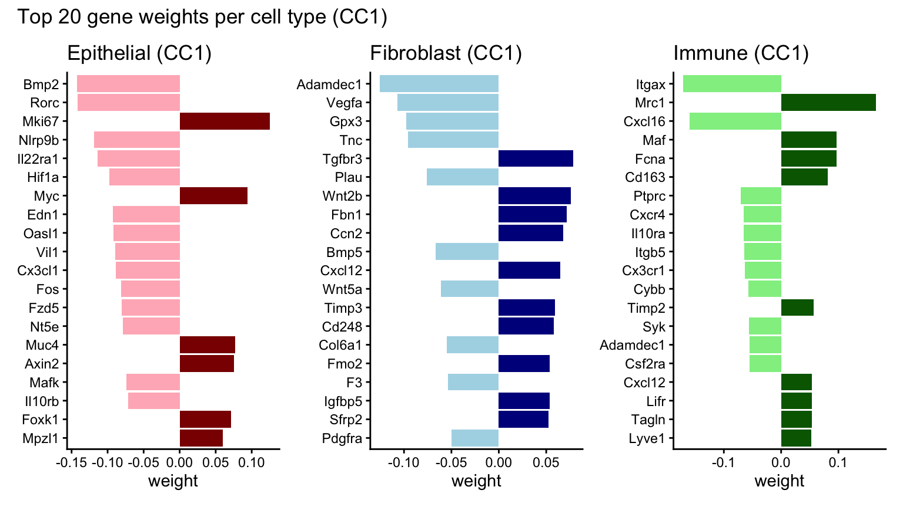
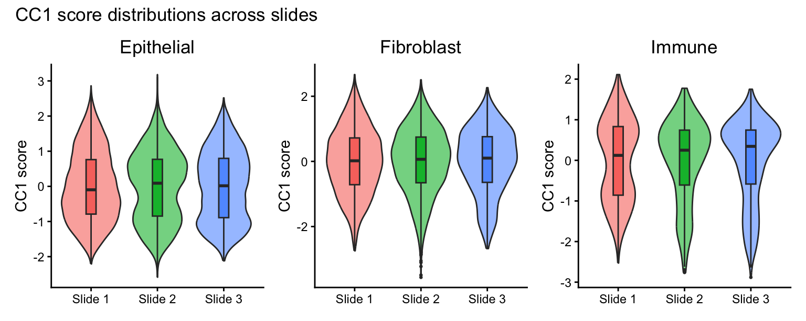
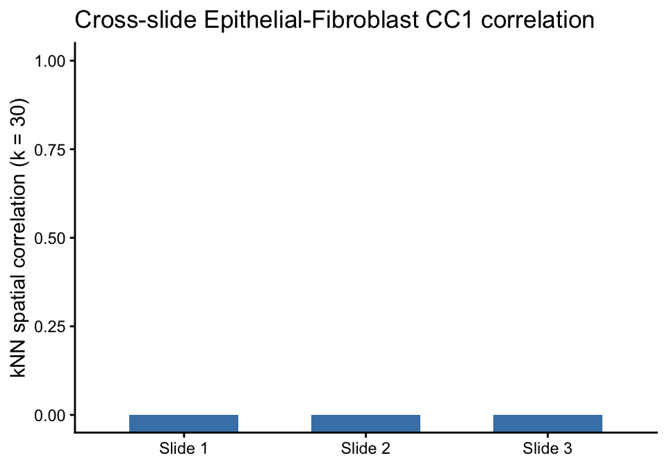

Multi-slide, multi-type joint analysis (Colon Day 0)
2026-05-19
Source:vignettes/colon_d0_multi_slide.Rmd
colon_d0_multi_slide.RmdOverview
When multiple tissue slides are available from the same condition,
CoPro can analyze them jointly using
newCoProMulti. This vignette demonstrates the
gene-space CCA workflow (runGeneSpaceCCA),
which operates directly on gene expression rather than PCA space.
Gene-space CCA is designed for multi-slide analysis: it maximizes the
average per-slide canonical correlation, preventing batch-level mean
shifts from inflating the objective.
This vignette walks through the full multi-slide workflow using three healthy colon Day 0 slides from different tissue regions:
- Create a
CoProMultiobject withnewCoProMulti - Compute distance and kernel matrices
- Run gene-space CCA (
runGeneSpaceCCA) - Visualize per-slide cell scores
- Examine cross-cell-type spatial correlation
- Inspect gene weights
For a complementary example showing multi-axis discovery on a single
slide, see the colon_d3_cross_type vignette. For the
reference-plus-transfer workflow (train on one slide,
transfer to others), see the colon_d9_multi_slide
vignette.
Download and load data
data_path <- copro_download_data("colon_d0_multi")
dat <- readRDS(data_path)
cat("Slides:", paste(dat$selectedSlides, collapse = "\n "), "\n")## Slides: 062921_D0_m3a_1_slice_1
## 082421_D0_m6_1_slice_1
## 082421_D0_m7_1_slice_1## Total cells: 39875## Genes: 928
table(dat$slideID)##
## 062921_D0_m3a_1_slice_1 082421_D0_m6_1_slice_1 082421_D0_m7_1_slice_1
## 14504 14739 10632Visualize the tissue
Each slide comes from a different tissue region, so the spatial
coordinates are on different scales. We plot each slide individually and
combine them with patchwork, which preserves each panel’s
own coordinate system.
Cell types across slides
plot_df <- data.frame(
x = dat$locationData$x,
y = dat$locationData$y,
celltype = dat$cellTypes,
slide = dat$slideID
)
slide_labels <- setNames(
paste0("Slide ", seq_along(dat$selectedSlides)),
dat$selectedSlides
)
plot_df$slide_label <- slide_labels[plot_df$slide]
ct_colors <- c("Epithelial" = "#E41A1C",
"Fibroblast" = "#377EB8",
"Immune" = "#4DAF4A")
ct_plots <- lapply(sort(unique(plot_df$slide_label)), function(sl) {
d <- plot_df[plot_df$slide_label == sl, ]
ggplot(d, aes(x = x, y = y, color = celltype)) +
geom_point(size = 0.1, alpha = 0.6) +
scale_color_manual(values = ct_colors, name = NULL) +
coord_fixed() +
ggtitle(sl) +
theme_classic() +
theme(axis.title = element_blank(),
plot.title = element_text(hjust = 0.5)) +
guides(color = guide_legend(override.aes = list(size = 2, alpha = 1)))
})
wrap_plots(ct_plots, ncol = 3) +
plot_layout(guides = "collect") +
plot_annotation(title = "Colon Day 0 -- three slides") &
theme(plot.title = element_text(hjust = 0.5),
legend.position = "bottom")
Create a multi-slide CoPro object
newCoProMulti takes a slideID vector that
tells CoPro which cells belong to which slide. The pipeline computes
distance and kernel matrices within each slide (cells
on different slides are never treated as spatial neighbors), while
gene-space CCA optimizes a shared set of gene weights across all slides
jointly.
cell_types <- c("Epithelial", "Fibroblast", "Immune")
multi_obj <- newCoProMulti(
normalizedData = dat$normalizedData,
locationData = dat$locationData,
metaData = dat$metaData,
cellTypes = dat$cellTypes,
slideID = dat$slideID
)
multi_obj <- subsetData(multi_obj, cellTypesOfInterest = cell_types)Run the gene-space CCA pipeline
Unlike the PCA-based pipeline (computePCA →
runSkrCCA), gene-space CCA operates directly on gene
expression. It internally standardizes expression per slide per cell
type, filters genes by prevalence, and clips extreme values. The only
prerequisites are distance and kernel matrices.
multi_obj <- computeDistance(multi_obj, distType = "Euclidean2D")
sigma_choice <- 0.01
multi_obj <- computeKernelMatrix(multi_obj, sigmaValues = sigma_choice)
multi_obj <- runGeneSpaceCCA(multi_obj, sigma = sigma_choice, nCC = 1)
multi_obj <- computeRegressionGeneScores(multi_obj, sigma = sigma_choice)Visualize cell scores per slide
A key advantage of multi-slide analysis: the same gene weights produce cell scores on every slide. Consistent spatial patterns across slides indicate a robust biological signal.
CC1 scores across all slides
cs <- getCellScoresInSitu(multi_obj, sigmaValueChoice = sigma_choice,
ccIndex = 1)
cs$slide <- multi_obj@metaDataSub$Slice_ID[
match(rownames(cs), rownames(multi_obj@metaDataSub))
]
if (is.null(cs$slide) || all(is.na(cs$slide))) {
cs$slide <- multi_obj@metaDataSub[
match(paste(cs$x, cs$y), paste(multi_obj@locationDataSub$x,
multi_obj@locationDataSub$y)),
"Slice_ID"
]
}
cs$slide_label <- slide_labels[cs$slide]
score_range <- quantile(cs$cellScores, c(0.025, 0.975), na.rm = TRUE)
cc1_plots <- lapply(sort(unique(cs$slide_label)), function(sl) {
d <- cs[cs$slide_label == sl, ]
d <- d[order(d$cellScores), ]
ggplot(d, aes(x = x, y = y, color = cellScores)) +
geom_point(size = 0.2, shape = 16, stroke = 0) +
scale_color_viridis_c(limits = score_range, oob = scales::squish,
name = "CC1") +
coord_fixed() +
ggtitle(sl) +
theme_classic() +
theme(axis.title = element_blank(),
plot.title = element_text(hjust = 0.5))
})
wrap_plots(cc1_plots, ncol = 3) +
plot_layout(guides = "collect") +
plot_annotation(title = "CC1 cell scores across slides") &
theme(plot.title = element_text(hjust = 0.5),
legend.position = "right")
Cross-type correlation
CoPro finds axes along which nearby cells of different types co-vary. Here we plot the spatially smoothed epithelial score against the raw fibroblast score — strong correlation confirms genuine cross-cell-type co-progression.
df_cc1 <- getCorrTwoTypes(multi_obj,
sigmaValueChoice = sigma_choice,
cellTypeA = "Epithelial",
cellTypeB = "Fibroblast",
ccIndex = 1
)
df_cc1$slide_label <- slide_labels[df_cc1$slideID]
slide_colors <- c("Slide 1" = "#E69F00", "Slide 2" = "#56B4E9",
"Slide 3" = "#009E73")
ggplot(df_cc1, aes(x = AK, y = B, color = slide_label)) +
geom_point(size = 0.3, alpha = 0.4) +
scale_color_manual(values = slide_colors, name = NULL) +
xlab("Epithelial CC1 (spatially smoothed)") +
ylab("Fibroblast CC1") +
ggtitle("Epithelial-Fibroblast co-progression (CC1, all slides)") +
theme_classic() +
theme(legend.position = "bottom") +
guides(color = guide_legend(override.aes = list(size = 2, alpha = 1)))
Gene weights
We use regression-based gene weights, which evaluate each gene independently against the cell score. This avoids collinearity issues where correlated genes split weight and produces more reproducible rankings across replicates.
Top genes for CC1
gene_bar_plot <- function(obj, ct, cc = 1, n_top = 20,
pos_col = "darkred", neg_col = "lightpink") {
key <- paste0("geneScores|sigma", sigma_choice, "|", ct)
gs <- obj@geneScoresRegression[[key]]
gs_cc <- gs[, cc]
top <- head(sort(abs(gs_cc), decreasing = TRUE), n_top)
top_df <- data.frame(
gene = factor(names(top), levels = rev(names(top))),
weight = gs_cc[names(top)]
)
top_df$direction <- ifelse(top_df$weight > 0, "positive", "negative")
ggplot(top_df, aes(x = gene, y = weight, fill = direction)) +
geom_col() +
coord_flip() +
scale_fill_manual(values = c("positive" = pos_col,
"negative" = neg_col)) +
ggtitle(paste0(ct, " (CC1)")) +
theme_classic() +
theme(legend.position = "none",
axis.title.y = element_blank())
}
p_epi <- gene_bar_plot(multi_obj, "Epithelial",
pos_col = "darkred", neg_col = "lightpink")
p_fib <- gene_bar_plot(multi_obj, "Fibroblast",
pos_col = "darkblue", neg_col = "lightblue")
p_imm <- gene_bar_plot(multi_obj, "Immune",
pos_col = "darkgreen", neg_col = "lightgreen")
p_epi + p_fib + p_imm +
plot_annotation(title = "Top 20 gene weights per cell type (CC1)")
Cross-slide consistency
Since each slide comes from a different tissue region, consistent gene-space CCA scores across slides confirm a robust biological signal. We compare per-slide score distributions and cross-cell-type correlations.
Per-slide score distributions
meta <- multi_obj@metaDataSub
meta$cc1 <- meta[, paste0("cellScore_sigma_", sigma_choice, "_cc_index_1")]
meta$slide_label <- slide_labels[meta$Slice_ID]
dist_plots <- lapply(cell_types, function(ct) {
d <- meta[meta$Tier1 == ct, ]
ggplot(d, aes(x = slide_label, y = cc1, fill = slide_label)) +
geom_violin(alpha = 0.6, show.legend = FALSE) +
geom_boxplot(width = 0.15, outlier.size = 0.5, show.legend = FALSE) +
ylab("CC1 score") +
ggtitle(ct) +
theme_classic() +
theme(axis.title.x = element_blank(),
plot.title = element_text(hjust = 0.5))
})
wrap_plots(dist_plots, ncol = 3) +
plot_annotation(title = "CC1 score distributions across slides")
Per-slide cross-type correlation
loc <- multi_obj@locationDataSub
meta$loc_x <- loc$x[match(rownames(meta), rownames(loc))]
meta$loc_y <- loc$y[match(rownames(meta), rownames(loc))]
corr_df <- data.frame()
for (sl in dat$selectedSlides) {
sl_idx <- meta$Slice_ID == sl
epi_idx <- sl_idx & meta$Tier1 == "Epithelial"
fib_idx <- sl_idx & meta$Tier1 == "Fibroblast"
epi <- meta$cc1[epi_idx]
fib <- meta$cc1[fib_idx]
xy_epi <- meta[epi_idx, c("loc_x", "loc_y")]
xy_fib <- meta[fib_idx, c("loc_x", "loc_y")]
k <- min(30, length(fib))
smoothed <- numeric(length(epi))
for (i in seq_along(epi)) {
dists <- sqrt((xy_fib$loc_x - xy_epi$loc_x[i])^2 +
(xy_fib$loc_y - xy_epi$loc_y[i])^2)
nn <- order(dists)[seq_len(k)]
smoothed[i] <- mean(fib[nn])
}
r_val <- abs(cor(epi, smoothed))
corr_df <- rbind(corr_df, data.frame(
slide = slide_labels[sl],
pair = "Epi-Fib",
r = round(r_val, 3)
))
}
ggplot(corr_df, aes(x = slide, y = r)) +
geom_col(fill = "steelblue", width = 0.6) +
geom_text(aes(label = r), vjust = -0.5) +
coord_cartesian(ylim = c(0, 1)) +
ylab("kNN spatial correlation (k = 30)") +
ggtitle("Cross-slide Epithelial-Fibroblast CC1 correlation") +
theme_classic() +
theme(axis.title.x = element_blank())
Key points
-
runGeneSpaceCCAoperates directly in gene space, avoiding PCA. It maximizes the average per-slide canonical correlation, which naturally handles batch effects across slides. -
No PCA required: the pipeline is
computeDistance→computeKernelMatrix→runGeneSpaceCCA. Gene filtering and standardization are handled internally. -
Per-slide visualization with
patchworkpreserves each slide’s coordinate system, avoiding the distortion thatfacet_wrapcan introduce when slides have different spatial scales. - Gene weights from gene-space CCA directly reflect each gene’s contribution to the co-progression axis—no back-projection from PCA space is needed.
- For single-slide multi-axis discovery, see the
colon_d3_cross_typevignette. For reference-plus-transfer, seecolon_d9_multi_slide.
Session info
## R version 4.5.2 (2025-10-31)
## Platform: aarch64-apple-darwin20
## Running under: macOS Tahoe 26.1
##
## Matrix products: default
## BLAS: /System/Library/Frameworks/Accelerate.framework/Versions/A/Frameworks/vecLib.framework/Versions/A/libBLAS.dylib
## LAPACK: /Library/Frameworks/R.framework/Versions/4.5-arm64/Resources/lib/libRlapack.dylib; LAPACK version 3.12.1
##
## locale:
## [1] en_US.UTF-8/en_US.UTF-8/en_US.UTF-8/C/en_US.UTF-8/en_US.UTF-8
##
## time zone: America/New_York
## tzcode source: internal
##
## attached base packages:
## [1] stats graphics grDevices utils datasets methods base
##
## other attached packages:
## [1] patchwork_1.3.2 CoPro_1.1.0 testthat_3.3.2 magrittr_2.0.5
## [5] devtools_2.5.0 usethis_3.2.1 ggplot2_4.0.2 dplyr_1.2.1
##
## loaded via a namespace (and not attached):
## [1] generics_0.1.4 lattice_0.22-9 evaluate_1.0.5 grid_4.5.2
## [5] RColorBrewer_1.1-3 pkgload_1.5.1 fastmap_1.2.0 maps_3.4.3
## [9] rprojroot_2.1.1 Matrix_1.7-5 pkgbuild_1.4.8 sessioninfo_1.2.3
## [13] brio_1.1.5 purrr_1.2.1 spam_2.11-3 viridisLite_0.4.3
## [17] scales_1.4.0 cli_3.6.5 rlang_1.2.0 ellipsis_0.3.3
## [21] withr_3.0.2 cachem_1.1.0 otel_0.2.0 tools_4.5.2
## [25] parallel_4.5.2 memoise_2.0.1 vctrs_0.7.2 R6_2.6.1
## [29] matrixStats_1.5.0 lifecycle_1.0.5 fs_2.0.1 irlba_2.3.7
## [33] pkgconfig_2.0.3 desc_1.4.3 pillar_1.11.1 gtable_0.3.6
## [37] glue_1.8.0 Rcpp_1.1.1 fields_17.1 xfun_0.57
## [41] tibble_3.3.1 tidyselect_1.2.1 knitr_1.51 rstudioapi_0.18.0
## [45] farver_2.1.2 labeling_0.4.3 dotCall64_1.2 compiler_4.5.2
## [49] S7_0.2.1